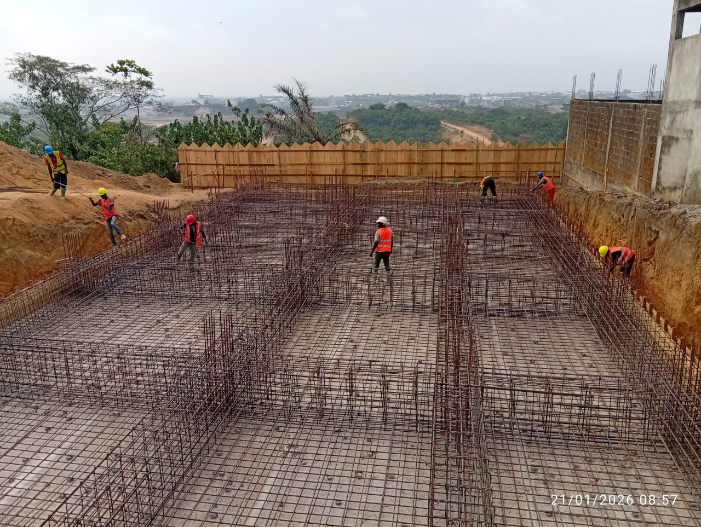
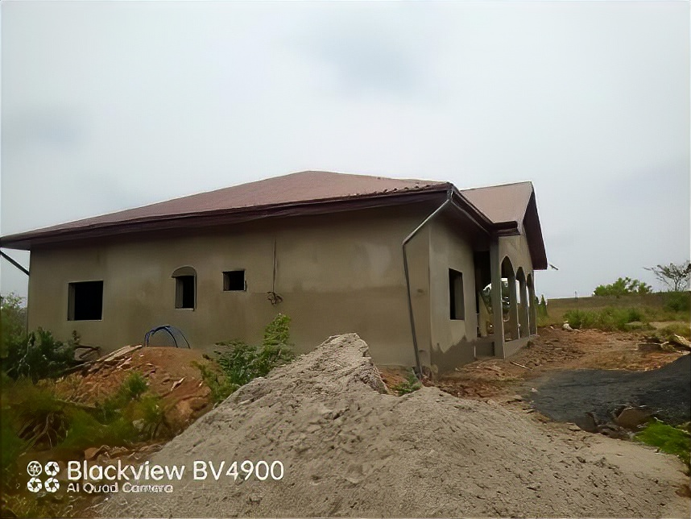
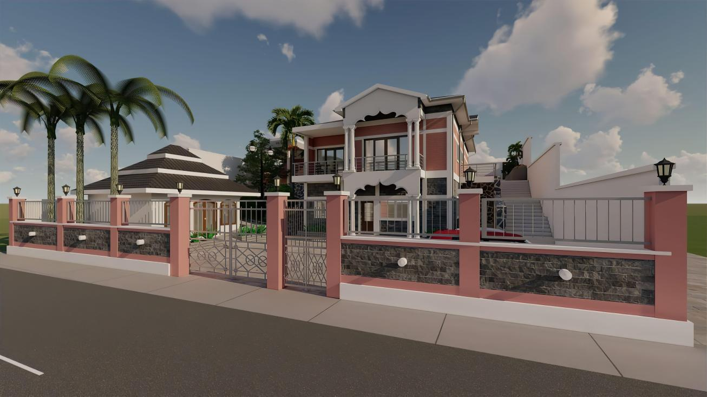
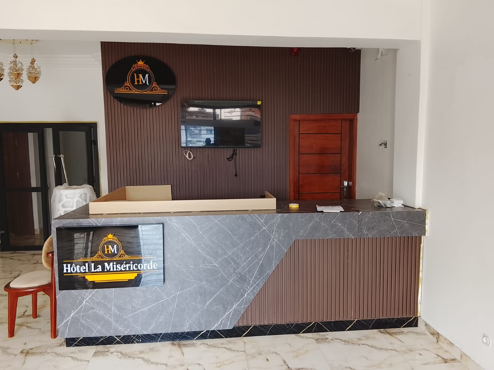
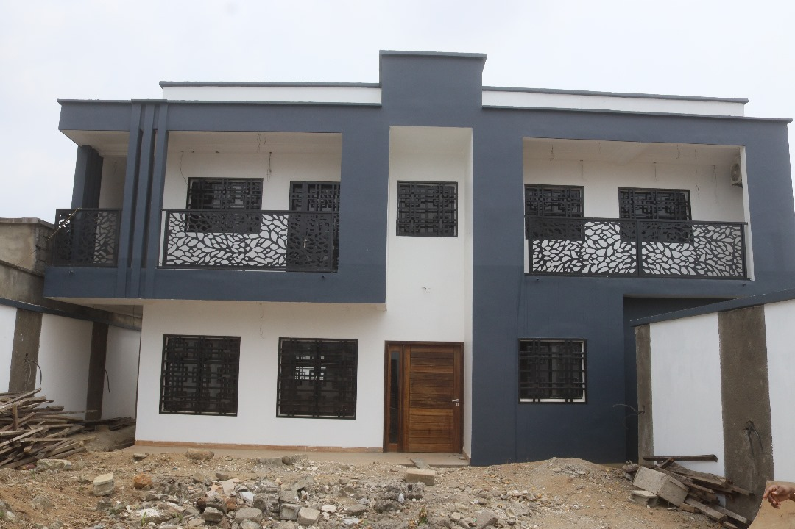
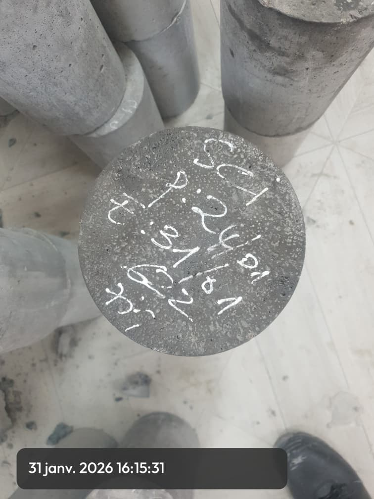
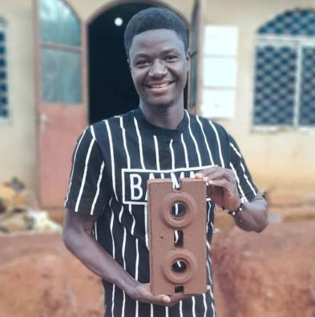
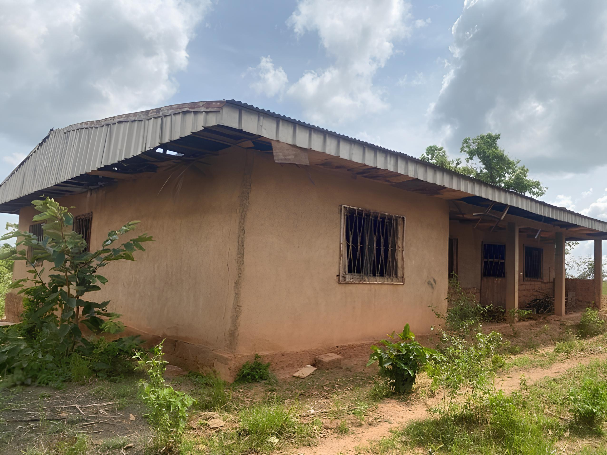

Une sélection de projets pilotés ou suivis par les équipes KOMA et son écosystème. Pour chacun : le contexte, le risque client, l'intervention apportée et les preuves produites. Aucune simulation, aucune surenchère.

Japoma · DoualaDiagnostic humidité, recettes matériaux, contrôle ferraillage, validation centrale béton. Suivi terrain documenté.

Bangang FokamDiagnostic complet, programme de rénovation phasé, suivi exécution, livraison avec PV de réception.
 St Tropez · R+5
St Tropez · R+5
Reprise du crépissage façade, guérite d'entrée, terrasse et finitions extérieures. Relance structurée et livraison finale.

Bana · BTCConception bioclimatique, solution BTC locale, traitement humidité terrain en pente, drainage et contrôle qualité.

HôtellerieConception, fabrication, pose et contrôle des aménagements sur site hôtelier en service — livrés par zones.

Le Jasmin · R+5Planning multi-lots, arbitrages par phase, livraison par zones successives, coordination des corps d'état.
Construction d'un immeuble R+5 dans la zone Yassa / Japoma à Douala. Terrain à enjeux : terrain humide, drainage important, contraintes climatiques tropicales.
Décaissements importants en cours de chantier. Risque de non-conformité des ouvrages enterrés (ferraillage, dosage béton) impossible à corriger après coulage.

Éprouvettes bétonConstruction biosourcée en BTC sur terrain en pente, dans une zone à forte pluviométrie. Programme : R+1 résidentiel pour client diaspora.
Choix constructif local peu encadré, risque humidité fort, nécessité de traitement technique adapté pour préserver la durabilité.

Brique BTC localeMaison familiale rurale en mauvais état, structure dégradée, toiture défaillante. Demande client : réhabiliter sans démolir, conserver la valeur patrimoniale.
Reprise de pathologies multiples sur structure existante. Budget pouvant déraper si les diagnostics initiaux sous-estiment l'ampleur des travaux.

Avant rénovationImmeuble R+5 dont les travaux extérieurs et de finition étaient à l'arrêt. Crépissage façade incomplet, guérite d'entrée non terminée, terrasse non finalisée. Coordination défaillante entre intervenants.
Bâtiment livré inutilisable côté extérieur, dégradation des ouvrages exposés, pertes financières si abandon.
St Tropez R+5 · Après reprise
Aménagement intérieur d'un établissement hôtelier en service. Contrainte forte : ne pas perturber l'exploitation, livraisons par zones et plages horaires définies.
Surface ouverte au public pendant les travaux. Risque qualité, sécurité et délais avec impact direct sur le chiffre d'affaires.
Programme résidentiel R+5 comportant plusieurs logements à livrer en phases successives. Arbitrages sur les priorités de livraison et la coordination des corps d'état.
Risque de blocage du planning global par retard sur un lot critique. Risque financier si livraisons partielles non sécurisées juridiquement.

« Des chantiers qu'on peut visiter. Des preuves qu'on peut vérifier. Rien à croire sur parole. » Références KOMA — 6 chantiers documentés de bout en bout
Si vous reconnaissez votre situation dans l'un de ces cas, il est probablement temps de structurer votre projet avec une méthode et un tiers de confiance.